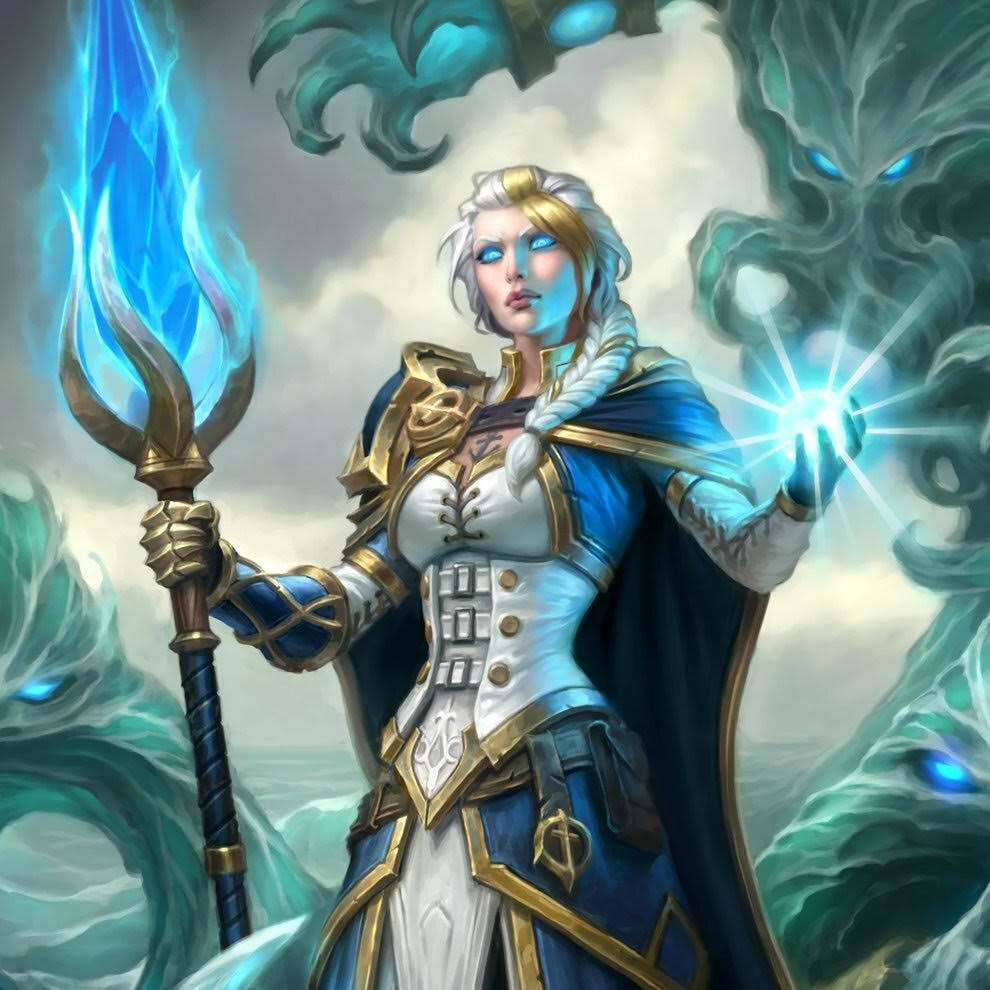

Conocido como el archidruida más poderoso de la historia, Malfurion tiene un alma bondadosa y ama con todo su
corazón a Tyrande. Estudió bajo la tutela del semidiós Cenarius y pasó gran parte de su existencia
durmiendo, atrapado en el Sueño Esmeralda.
Malfurion Tempestira
Título
Shan'do, Líder de los elfos de la noche, Primero de los Druidas, Archidruida del Claro de la Luna
Género
Masculino
Raza
Elfo de la noche (Humanoide)
Clase
Guardián del bosque (WC3), Druida, Healer, Scout, Druid of the Wild (RPG)
Reacción
Alianza, Horda
Afiliación(es)
Alianza, Darnassus, Círculo Cenarion, Guardianes de Hyjal
Ocupación
Archidruida de los kaldorei, Archidruida del Claro de la Luna, Líder de Darnassus [1], Líder del
Círculo Cenarion, Líder de la Guardianes de Hyjal, Líder de los Vengadores de Hyjal
Illidan Stormrage es un personaje icónico de Warcraft, conocido por su búsqueda implacable de poder y su
lucha constante entre el bien y el mal. Fue el primer Nigromante, maestro de magia vil y también un poderoso
cazador de demonios. Su historia está llena de tragedia y sacrificio.
Illidan Stormrage
Título
El Traidor, Cazador de Demonios
Género
Masculino
Raza
Elfo de la noche (antes), Demonio (tras mutaciones)
Clase
Cazador de Demonios, Nigromante, Mago, Druida de la Garfa
Reacción
Alianza, Horda
Afiliación(es)
Alianza, El Pacto, El Illidari, El Círculo Cenarion (anteriormente)
Ocupación
Cazador de demonios, Señor de Terrallende, líder de los Illidari, Nigromante
Tyrande Whisperwind es una poderosa sacerdotisa y líder de los elfos de la noche en el universo de Warcraft.
Es conocida por su valentía en la lucha contra las fuerzas de la oscuridad y su amor no correspondido por
Illidan Stormrage. Acompañada por su fiel sabio de la noche, Malfurion Stormrage, Tyrande juega un papel
crucial en la historia del mundo de Azeroth.
Tyrande Whisperwind
Título
Suma Sacerdotisa de Elune, Líder de los Elfos de la Noche
Género
Femenino
Raza
Elfo de la Noche
Clase
Sacerdotisa, Druidesa de la Garfa (en ciertas circunstancias)
Reacción
Alianza
Afiliación(es)
Los Elfos de la Noche, El Pacto, La Alianza
Ocupación
Líder político y religioso de los Elfos de la Noche, Suma Sacerdotisa
Localización
Santuario de Elune, Val'sharah
Estado
Viva
Relaciones
Malfurion Stormrage (esposo), Illidan Stormrage (amor no correspondido), Maiev Shadowsong (aliada y
a veces rival)
Arthas Menethil, también conocido como el Príncipe Arthas, fue uno de los personajes más icónicos y trágicos
en el universo de Warcraft. Originalmente un príncipe noble y prometedor, Arthas se convirtió en el Lich
King, el poderoso líder de los no-muertos. Su historia es una de corrupción y redención, y desempeñó un
papel crucial en la historia de Azeroth.
Arthas Menethil
Título
Príncipe de Lordaeron, El Lich King
Género
Masculino
Raza
Humano (antes de su transformación)
Clase
Paladín (antes), Caballero de la Muerte (después)
Reacción
Hostil
Afiliación(es)
La Plaga, Los Caballeros de la Muerte, El Lich King
Ocupación
Anteriormente príncipe de Lordaeron, posteriormente líder de los no-muertos
Localización
Ciudadela de la Corona de Hielo, Rasganorte
Estado
Antes humano, convertido en no-muerto, luego fusionado con el Lich King
Relaciones
Uther the Lightbringer (mentor), Jaina Proudmoore (amiga de la infancia), Sylvanas Windrunner
(enemiga), Tirion Fordring (adversario y posterior aliado)
Sylvanas Windrunner es uno de los personajes más notables y complejos del universo de Warcraft. Comenzó como
una poderosa elfa de sangre y líder de Quel'Thalas, pero su vida cambió para siempre cuando fue asesinada
por Arthas Menethil y transformada en una banshee. Eventualmente, se convirtió en la Reina Alma en Pena y
líder de los Renegados, luchando por la supervivencia de su gente.
"No tengo tiempo para juegos."
Sylvanas Windrunner
Título
Reina Alma en Pena, Ex-Dama de Quel'Thalas
Género
Femenino
Raza
Elfa de Sangre (anteriormente), Renegada
Clase
Cazadora, Pícaro (antes de su muerte)
Reacción
Variable (hostil hacia algunos, aliada con otros)
Afiliación(es)
Los Renegados, La Horda (anteriormente)
Ocupación
Líder de los Renegados, defensora de su pueblo
Localización
En busca de su destino
Estado
No-muerta
Relaciones
Arthas Menethil (antagonista), Varok Saurfang (aliado), Jaina Proudmoore (compañera de la Horda),
Nathanos Blightcaller (consejero y amante)
Thrall, también conocido como Go'el, es uno de los personajes más icónicos del universo de Warcraft. Es un
orco de la Horda que desempeñó un papel fundamental en la liberación de su pueblo y en la formación de la
Nueva Horda. A lo largo de su vida, ha sido un chamán poderoso, un líder sabio y un defensor de la paz entre
razas.
Thrall
Título
Jefe de Guerra de la Horda, Chamán
Género
Masculino
Raza
Orcos
Clase
Chamán
Reacción
Amistosa
Afiliación(es)
La Horda, El Círculo Cenarion (anteriormente)
Ocupación
Líder de la Horda, chamán
Localización
Orgrimmar
Estado
Vivo
Relaciones
Thrall ha tenido relaciones importantes con personajes como Thrall
Garrosh Hellscream es un personaje icónico del universo de Warcraft. Inicialmente, fue introducido como un
joven guerrero y más tarde se convirtió en uno de los líderes más controvertidos de la Horda. Su mandato
como Jefe de Guerra de la Horda estuvo marcado por decisiones polémicas y conflictos internos.
Garrosh Hellscream
Título
Jefe de Guerra de la Horda (anteriormente), Guerrero
Garrosh tuvo relaciones importantes con personajes como Thrall, Vol'jin y Cairne Bloodhoof
Aliados
Originalmente la Horda, más tarde la Legión Ardiente
Jaina Proudmoore
Jaina Proudmoore es un personaje icónico del universo de Warcraft. Es una poderosa maga y diplomática que ha
desempeñado un papel crucial en los eventos de Azeroth. Su historia está marcada por su búsqueda de la paz y
la reconciliación entre la Alianza y la Horda, así como por su lucha contra las fuerzas del Caos.
Jaina Proudmoore

Título
Archimaga, Líder de Theramore (anteriormente)
Género
Femenino
Raza
Humana
Clase
Maga
Reacción
Amistosa
Afiliación(es)
La Alianza, El Kirin Tor
Ocupación
Maga, Diplomática
Localización
Varios lugares de Azeroth
Estado
Viva
Relaciones
Jaina ha tenido relaciones importantes con personajes como Arthas Menethil y Thrall
Aliados
La Alianza, El Kirin Tor
Alexstrasza la Reina Dragón
Alexstrasza, también conocida como Alexstrasza la Reina Dragón, es uno de los personajes más importantes en
el universo de Warcraft. Como la Guardiana de la Vida y líder de los dragones rojos, su papel en la
protección de Azeroth es fundamental. Es conocida por su compasión y su deseo de preservar la vida en todas
sus formas.
Alexstrasza la Reina Dragón
Título
La Guardiana de la Vida, Reina Dragón
Género
Femenino
Raza
Draconiano (Dragón Rojo)
Clase
Guardiana de la Vida
Reacción
Amistosa
Afiliación(es)
El Vuelo Rojo, La Alianza
Ocupación
Protectora de la Vida
Localización
Templo del Reposo del Dragón, Rasganorte
Estado
Viva
Relaciones
Alexstrasza ha tenido relaciones importantes con personajes como Ysera y Korialstrasz
Aliados
El Vuelo Rojo, La Alianza
Sargeras el Titán Oscuro
Sargeras, también conocido como Sargeras el Titán Oscuro, es uno de los antagonistas principales en el
universo de Warcraft. Antiguamente era un titán benevolente encargado de purificar y ordenar el cosmos. Sin
embargo, cayó en la corrupción y se convirtió en uno de los villanos más temibles de la historia.
Sargeras el Titán Oscuro
Título
El Titán Oscuro, El Destructor de Mundos
Género
Masculino
Raza
Titán
Clase
Señor del Vacío
Reacción
Hostil
Afiliación(es)
La Legión Ardiente
Ocupación
Destrucción del Cosmos
Localización
Desconocida
Estado
Fallecido (en la trama actual)
Historia
Sargeras lideró la Legión Ardiente en su búsqueda por destruir mundos y corromper la vida. Fue
derrotado en varias ocasiones por los héroes de Azeroth.
Enemigos
Los ejércitos de Azeroth y los héroes que se oponen a la Legión Ardiente.
Medivh el Guardián de Tirisfal
Medivh, conocido como el último Guardián de Tirisfal, es un personaje clave en la historia de Warcraft.
Aunque comenzó como un ser poseído por una entidad demoníaca, eventualmente redimió su camino y desempeñó un
papel fundamental en la lucha contra las fuerzas del mal.
Medivh el Guardián de Tirisfal
Título
El último Guardián de Tirisfal
Género
Masculino
Raza
Humano
Clase
Mago
Reacción
Amigable
Afiliación(es)
La Alianza
Ocupación
Guardián de Tirisfal (anteriormente poseído por Sargeras)
Localización
Karazhan
Estado
Fallecido (resucitado temporalmente)
Historia
Medivh fue poseído por el titán oscuro Sargeras, pero logró liberarse de su influencia y luchó junto
a la Alianza en la Primera Guerra. Su legado perdura en Karazhan.
Aliados
Khadgar, Anduin Lothar, Garona
Aegwynn la Guardiana de Tirisfal
Aegwynn es una poderosa maga que desempeñó el papel de la Guardiana de Tirisfal en el mundo de Warcraft. Su
historia está llena de hazañas mágicas y conflictos contra las fuerzas del mal.
Aegwynn la Guardiana de Tirisfal
Título
Guardiana de Tirisfal (anteriormente)
Género
Femenino
Raza
Humana
Clase
Maga
Reacción
Amigable
Afiliación(es)
La Alianza
Ocupación
Guardiana de Tirisfal (anteriormente)
Localización
Desconocida
Estado
Fallecida
Historia
Aegwynn luchó contra la Legión Ardiente y dejó un legado como Guardiana de Tirisfal. Su poder y
sabiduría mágica son recordados en la historia de Azeroth.
Aliados
Medivh, Jaina Proudmoore, Antonidas
Alleria Windrunner
Alleria Windrunner es una destacada elfa de sangre y cazadora que desempeña un papel importante en la
historia de Warcraft. Su historia está llena de valentía y sacrificio en la lucha contra la Legión Ardiente.
Alleria Windrunner
Título
Cazadora de élite, Dama del Vacío
Género
Femenino
Raza
Elfa de sangre
Clase
Cazadora (anteriormente Pícara)
Reacción
Amigable
Afiliación(es)
La Alianza, Los Renegados
Ocupación
Cazadora de élite
Localización
Desconocida
Estado
Viva
Historia
Alleria luchó contra la Legión Ardiente y se convirtió en la Dama del Vacío. Su historia está
entrelazada con su hermana Sylvanas y su esposo Turalyon.
Aliados
Sylvanas Windrunner, Turalyon, Vereesa Windrunner
Trailer The War Within & Legion - de la saga Warcraft